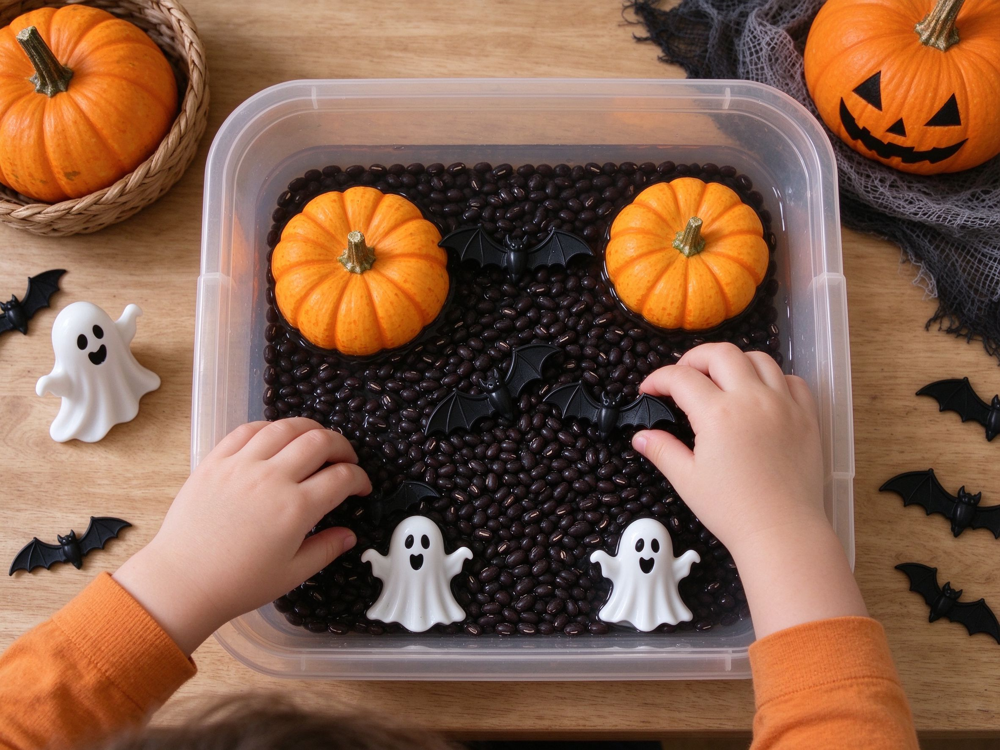

Toddler Guide · Ages 1–4
The Complete Toddler Halloween Guide
Age-by-age safety, at-home activities, and costume tips — so you and your little one can enjoy the holiday stress-free.
Age-by-age safety, at-home activities, and costume tips — so you and your little one can enjoy the holiday stress-free.
Halloween with a toddler is equal parts adorable and stressful. Will they be scared of costumes? Is it safe to take them door-to-door? What if they put candy in their mouth before you check it? You're not alone — every parent of a young child asks these questions.
This guide breaks it down by age, so you know exactly what to expect, what to skip, and how to make October 31st fun without the meltdowns.
There's no hard rule, but pediatricians and experienced parents agree on rough age ranges.
Based on guidance from the CDC and American Academy of Pediatrics (AAP).
If your toddler is too young, too shy, or you just don't want to go door-to-door, these activities are just as fun.

Fill a plastic tub with black beans, small pumpkins, plastic bats, ghost figurines, and plastic spiders. Let them scoop, pour, and sort. It's a great way to practice fine motor skills — and it keeps them busy for 30+ minutes.
Skip the knives. Let toddlers paint small pumpkins with non-toxic washable paint, stick on googly eyes, or use stickers. It's mess-free (well, mostly) and lets them feel like they're creating something spooky.
Turn off the lights, hand out glow sticks, and put on kid-friendly Halloween music. Toddlers love dancing in the dark — and it wears them out before bedtime. Pair it with popcorn or apple slices.
Snuggle up with gentle Halloween books like Room on the Broom, The Spooky Wheels on the Bus, or Five Little Pumpkins. It's low-key, cozy, and perfect for kids who get overstimulated.
If your child has food allergies — or you just want to skip the sugar — hand out these at home, or keep a stash of your own.
Cute is important, but safe matters more. Here's what to look for.